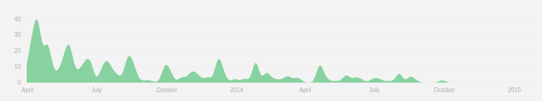

- dev console as clevernote.demo
- oauth2 playground and get access token
- Todo
- ts - modules
- c9
- pres -> structure
- github
Setup
Agenda
- Welcome
- Recap of Todo app
- Description of mission, should you choose to accept it
- Getting the code, dev environment
- Presentation
- JavaScript async and promises
- REST cooked three ways
- Ready, steady ... code
- Solution presentation and discussion
The Todo application
... because the world needs more Todo apps
Todo Application structure
Tonight's intro mission
(the one the movie always starts with)
- Configure dev.clevernote.co (needed for Google Tasks) in /etc/hosts or %WinDir%\System32\Drivers\Etc\hosts
- Connect to WiFi 1, password BeTheFuture
- Browse to this presentation
- For local working git clone https://github.com/pinoyyid/ngManila-jan15,
or browse to dev.clevernote.co:3131 and take a letter - Decide if you want to use the .ts or .js files. If .ts, you probably want to use the cloud IDE rather than spend time setting up your own TypeScript environment
- If you are using cloud9 and TypeScript, do tools/extension manager and check http://dev.clevernote.co:8000/cloud9-typescript.js is enabled
Tonight's main mission
(the spine of the movie)
- Choose one of $http, $resource, Restangular
- Implement inserting a new Task
- Deal with a 401 exception (meaning missing authentication header)
- Implement updating a Task to mark it as complete
- Implement downloading the Tasks if localstorage is empty
Test Server details
http://dev.clevernote.co:8080/tasks/v1/lists/MDM4NjIwODI0NzAwNDQwMjQ2MjU6OTEzMzE4NTkxOjA/tasks
{kind:"tasks#tasks", items:[{id:"id1", title:"title-1"},{id:"id1", title:"title-1"}]}
Authorization: Bearer access_token
For the test server, the access_token can be anything. For Google it needs to be a valid token which will be provided for you. The server will respond with a 401 if the token is missing or malformed.
Tonight's bonus mission
(the bit where you go maverick and save the world)
- Convert to use Google Tasks (should be no more than setting the correct access token and URL)
Google Tasks API
tasklist id = MDM4NjIwODI0NzAwNDQwMjQ2MjU6OTEzMzE4NTkxOjA
OAuth Access Token = tba - Add feedback to the user with a loading/saving/error crouton
- Deal with paginated output (ie. presence of nextPageToken)
- deal with 'offline mode', ie. update localstorage then sync when online. sync needs to deal with ngTodo localstorage to Google *and* Google to ngTodo
Consuming REST services in AngularJS
You can't do REST without understanding 'promises'
- Angular is async, non-blocking. You knew that right?
// sleep for 1s then say hello
Thread.sleep(1000); // 1
System.out.println("Hello at last"); // 2
String foo="bar"; // 3
System.out.println(foo); // 4 displays "bar"
// sleep for 1s then say hello
setTimeout(function() { // 1
console.log("Hello at last") // 3
var foo = "bar"; // 4
}
, 1000);
console.log(foo); // 2 displays "undefined"
Example, what would the JavaScript for this problem look like?
- wait 1 second
then fetch the current temperature (A)
then wait 1 minute
then fetch the current temperature (B)
then wait 1 second
then display the average temperature (A+B/2)
Example, what would the traditional JavaScript for this problem look like?
setTimeout(
function() {
self.getTemp('A', function() {
console.log('sleeping for 1m (6000ms)');
setTimeout(
function() {
self.getTemp('B',
function() {
console.log('sleeping for 1s');
setTimeout(function() {
console.log('average temp over last minute is ' + ((window['A'] + window['B']) / 2));
}, 1000); // alice
})
}, 60000);
})
}, 1000); // bob
JavaScript using promises
- wait 1 second
then fetch the current temperature (A)
then wait 1 minute
then fetch the current temperature (B)
then wait 1 second
then display the average temperature (A+B/2)
this.sleep(1000)
.then(() => { return this.getTempPromise('A') })
.then(() => { return this.sleep(60000) })
.then(() => { return this.getTempPromise('B') })
.then(() => { return this.sleep(1000) })
.then(() => { console.log('average temp over last minute is ' + ((window['A'] + window['B']) / 2)); })
Wow, that's so call. Teach me how!
- Here is how setTimeout can be wrapped by a promise.
- If you understand this, you're 90% done.
/**
* sleep then resolve promise
* @param ms the number of ms to sleep for
* @return a promise
*/
sleep(ms: number):ng.IPromise {
console.log('sleeping for ' + ms + 'ms');
var deferred = this.q.defer(); // 1. create the deferred object
setTimeout(() => {
deferred.resolve(); // 3. call 'resolve' on the deferred object when the activity completes
}, ms);
return deferred.promise; // 2. return the deferred object's promise
}
AngularJS REST. Three common mechanisms
(all of which use promises)
- $http - Built into core AngularJS
- $resource - An AngularJS optional module
- Restangular - A third party library
$http
- Core Angular. Everything else ultimately calls $http
function newTodo(title:string) {
var promise = $http.post(someURL, {
"title": title
});
promise.error((data, status, headers, config) => {
if (status == 401) {
console.warn("Need to acquire a new Access Token and resubmit");
}
}
return promise;
}
newTodo("Pay Meralco")
.success( function (serverResponse) {i
console.log('The id of our newly created Task is '+serverResponse.id)
});
$http, advanced features
- Setting a default HTTP header for all $http calls
$http.defaults.headers.common.Authorization = 'Bearer ' + this.getAccessToken();
$http, advanced features
- Adding an interceptor
// register the interceptor as a service
$provide.factory('myHttpInterceptor', function($q, dependency1, dependency2) { return { // all functions are optional
'request': function(config) { // called prior to each request
return config; },
'requestError': function(rejection) { // rarely used
if (canRecover(rejection)) {
return responseOrNewPromise
} return $q.reject(rejection); },
'response': function(response) { // called after each success
return response; },
'responseError': function(rejection) { // called after each error
if (canRecover(rejection)) {
return responseOrNewPromise
} return $q.reject(rejection); }
}; });
// add your interceptor to the interceptors array
$httpProvider.interceptors.push('myHttpInterceptor');
ngResource
- No longer core Angular, so need to <script> angular-resource.js and declare module to app
- Handles URL mangling from a base URL, eg. /tasks/v1/lists/:tasklistId/task/:taskId
- ... based on assumptions about how a REST URL is constructed
- Turns plain old model objects into $resource objects with added REST methods
var User = $resource('/user/:userId', {userId:'@id'});
User.get({userId:123}, function(user) {
user.abc = 'foo';
user.$save();
});
Restangular
- Third party OSS
- Keeps track of relationships, state, etag, etc by adding properties to the model objects
- For me, this is an anti-pattern.
- Restangular 2 presentation from ngEurope
- Restangular 1 "fixes the problems with ngResource"
- Restangular 2 "fixes the problems with Restangular 1" 
Real men use $http
Gentlement hackers, hack.
... using one of $http, $resource, Restangular
Todo Application structure
<Thank You!>
roy.smith.esq@gmail.com